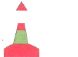

| 231. Плавате в район B, виждате стълбовиден буй. Какво означава?:  |
|
Границите на подводни кариери Лява страна на основната посока за движение Основния път е на ляво Мини на Изток от мен |
| документ регламентиращ правилния отговор: IALA Maritime Buoyage System NP 735 Diagram 4 |
| 232. Плавате в район B, виждате стълбовиден буй. Какво означава?: |
|
Мини на изток от мен Дясна страна на основната посока за движение Основния път е на ляво Района е за отдих и развлечения |
| документ регламентиращ правилния отговор: IALA Maritime Buoyage System NP 735 Diagram 4 |
IALA - КАРДИНАЛНИ ЗНАЦИ
|
| 233. Какво показват на корабоводителя кардиналните знаци?: |
|
Къде се намират котвените стоянки Къде може да намери безопасни за плаване води В коя посока да следва основния път Как да пресече зона за разделно движение |
| документ регламентиращ правилния отговор: IALA Maritime Buoyage System NP 735 (3.1) (3.2) |
| 234. Каква е формата и броя на топовите фигури на кардиналните знаци?: |
|
Един, с конична форма Един, с цилиндрична форма Двойки сфери Двойки конуси |
| документ регламентиращ правилния отговор: IALA Maritime Buoyage System NP 735 (3.3) |
| 235. Какъв цвят имат топовите фигури на кардиналните знаци?: |
|
Черен и червен Винаги черен Винаги жълт Зелен и червен |
| документ регламентиращ правилния отговор: IALA Maritime Buoyage System NP 735 (3.3) |
| 236. Виждте следните топови фигури. На какъв знак се поставят?: |
|
Знак за изолирана опасност Латерален Северен кардинален Знак за безопасни води |
| документ регламентиращ правилния отговор: IALA Maritime Buoyage System NP 735 (3.3) |
| 237. Виждте следните топови фигури. На какъв знак се поставят?: |
|
Знак за изолирана опасност Знак за безопасни води Северен латерален Източен кардинален |
| документ регламентиращ правилния отговор: IALA Maritime Buoyage System NP 735 (3.3) |
| 238. Виждте следните топови фигури. На какъв знак се поставят?: |
|
Латерален, "основния път е на дясно" Знак за изолирана опасност Знак за безопасни води Южен кардинален |
| документ регламентиращ правилния отговор: IALA Maritime Buoyage System NP 735 (3.3) |
| 239. Виждте следните топови фигури. На какъв знак се поставят?: |
|
Латерален, "основния път е на ляво" Западен кардинален Знак за изолирана опасност Знак за безопасни води |
| документ регламентиращ правилния отговор: IALA Maritime Buoyage System NP 735 (3.3) |
| 240. Какви цветове се използват за кардиналните знаци?: |
|
Черно и жълто Черно и червено Бяло и червено Зелено и червено |
| документ регламентиращ правилния отговор: IALA Maritime Buoyage System NP 735 (3.3) |